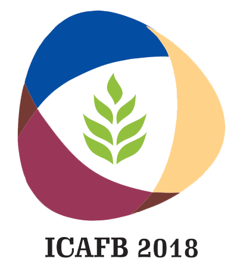
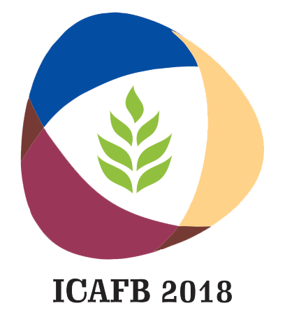

International Conference on Emerging Synergies In Agriculture, Food Processing Engineering and Biotechnology
ICAFB2018
21st to 23rd February, 2018
The World population is expected to reach 8 billion in 2025 with a significant increase in developing countries. It is essential to have sustainability in food security, agriculture practices, natural resources utilization, environment, health and hygiene and eco-friendly technologies to maintain coherence in a balanced ecosystem. Due to the alarming change in climate, challenges in the agriculture practices, degradation of land due to urbanization and increasing trade restriction, there is a need for innovative technological interventions in the field of agriculture, food processing engineering and biosciences.
The International Conference envisages to provide a common platform for academicians, scientists,industrialists, practicing professionals and stakeholders to share their knowledge, plan for collaborative activities in the areas of concern with experts from across the globe and draw out appropriate recommendations for a viable synergy between the elements of nature.